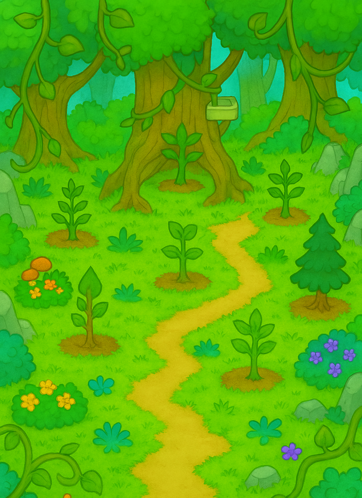
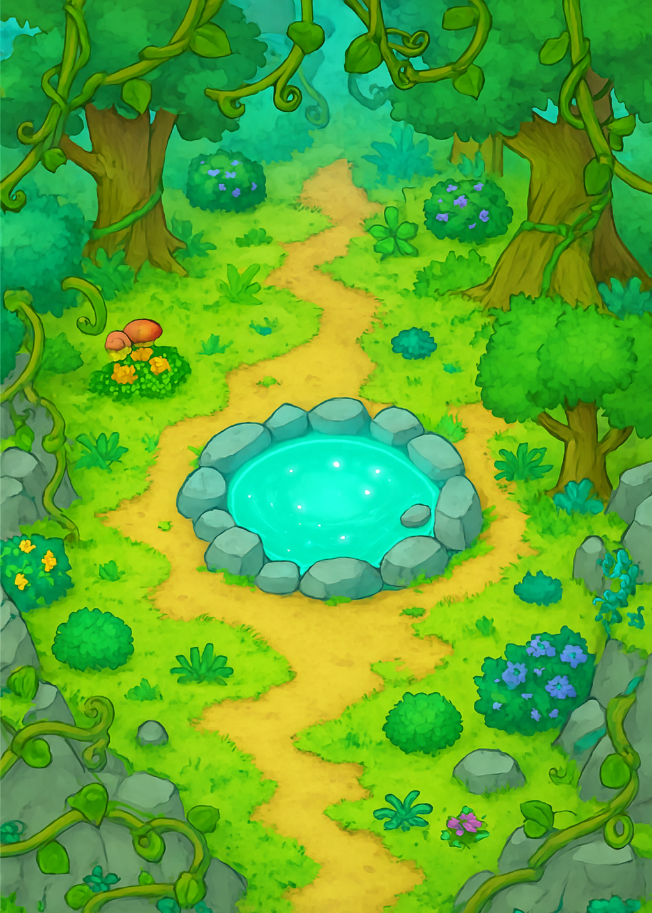
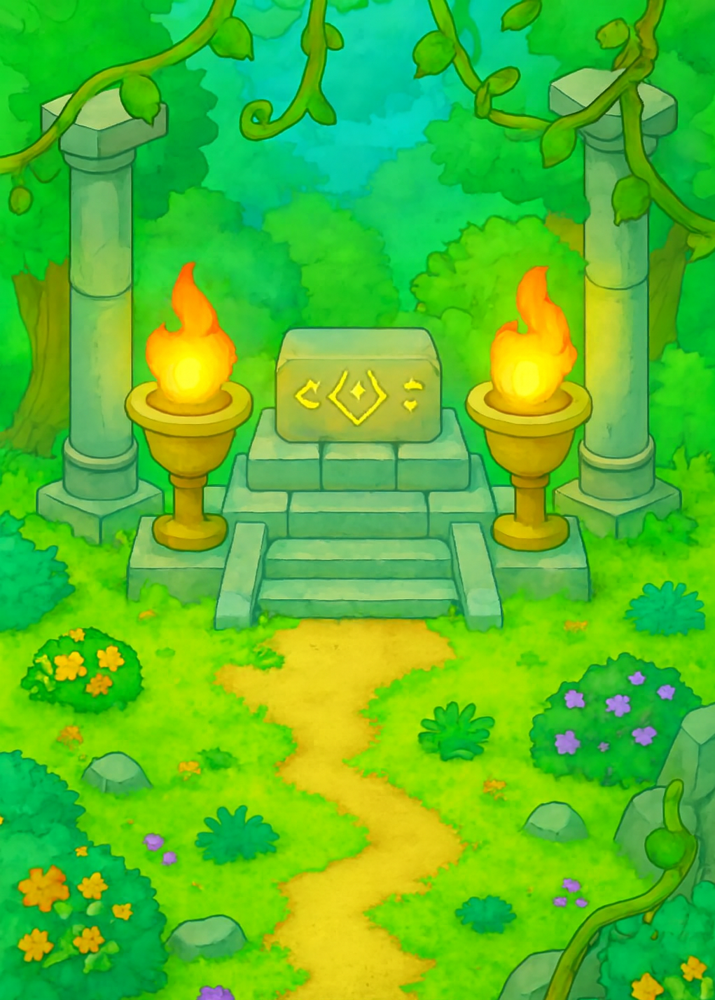
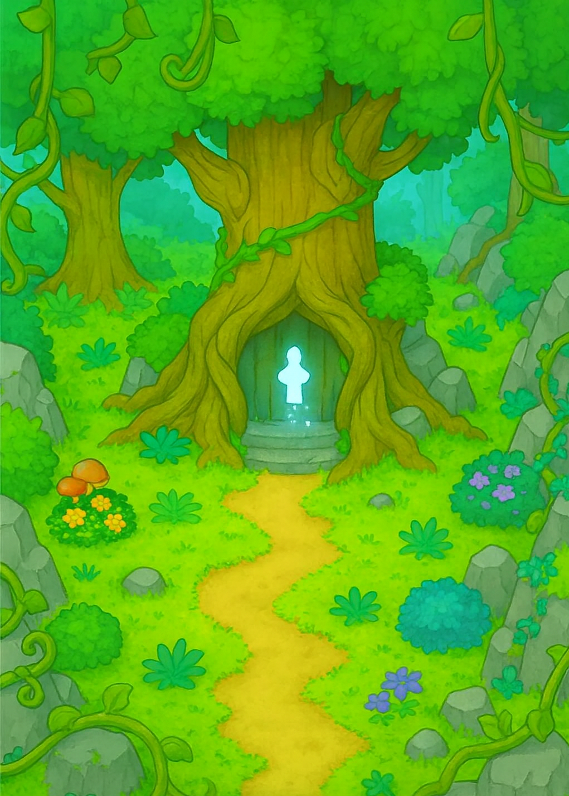

目錄
1.發想
2.遊戲介紹
3.故事大綱
4.遊戲流程
5.角色介紹
6.遊戲道具
製作動機：
看到了天災帶來太多的傷亡，所以想從根本來解決水土保持的問題，杜絕重複發生的問題。
遊戲目的：在現今開發過度的社會中，森林也被砍伐到逐漸消失，藉由遊戲的方式來告訴玩家們應該重視環境的保育，並喚起更深層的環保意識。
為甚麼玩家會想要玩這款遊戲：可能是因為這款遊戲不需要太多時間，也沒有趕進度的問題，單純的放置跟養成，還能跟小精靈互動，並且能喚醒你心裡那份保護森林的意識，延續到遊戲外。
以手機操控為主
單機放置類的RPG遊戲
藉由種植樹苗來建造各種建設，加快淨化的速度，同時抵禦怪物入侵
精靈會增加玩家收成資源的數量
在古老的森林裡，有一顆名為「森林之心」的水晶，賦予萬物生命。然而，因為一股神秘的腐化力量，它逐漸失去了能量。森林開始枯萎，動物變得狂暴。
玩家作為「新任守護者」，必須透過經營、收集和放置，逐步恢復森林的生機，直到「森林之心」再次閃耀。
1.操作方式
用手指觸碰手機螢幕來互動、移動角色
道具會自動收到背包裡，有溢出才會提醒玩家
2.劇情
（部分畫面有過場動畫）
【序章】
很久以前，森林之心閃耀著翠綠的光芒，讓整片大地繁盛。但有一天，光芒黯淡，腐化蔓延。樹枯死、河乾涸、動物化為黑影。當森林最後的守護者艾娜透支力量時，她將一顆「新芽之種」托付給了小精靈波波，讓牠找尋新的守護者，多年後，玩家作為被命運選中的新守護者，踏入了這片荒蕪的大地。
【第一章】
波波出現迎接玩家，帶領他找到了腐敗的「森林之心」，玩家在殘破的神木旁種下「新芽」，開始第一個資源生產（木材），守林人艾娜的靈魂出現，教導玩家如何恢復生態，玩家逐步建造樹苗園地與靈泉水池，讓綠色重新蔓延。
【第二章】
腐化獸開始頻繁出現，破壞玩家的區域，玩家放置精靈淨化腐化源頭，但同時會聽到奇怪的低語，波波開始出現異常行為，偶爾會發呆，甚至說出不屬於牠的聲音。
【第三章】
玩家重建祭壇，召喚出更多自然精靈（火、風、水）。這些精靈透露出真相的一角：「森林之心的能量太強，生態被過度滋養，導致自我崩壞。」
艾娜的靈魂逐漸變得虛弱，她懷疑波波體內封印著腐化的核心。玩家必須選擇是否繼續使用森林之心的力量來強化生產，或暫時封印它以保護自然平衡。
劇情分歧點出現
貪婪線：為了加速復甦，玩家繼續強化森林之心（壞結局）
平衡線：玩家選擇讓森林自然成長（好結局）
【第四章】
平衡線—再生之森
玩家選擇慢慢培養森林，不再貪求能量，波波身上的腐化逐漸被自然能量中和，牠恢復成純淨的生命精靈，艾娜出現並微笑著說：「你比我更懂得守護的意義」隨後消散在玩家面前，聖樹開花，森林恢復生機，天空重現光明，森林之心重新脈動。
貪婪線—永夜之森
玩家大量吸取森林之心的能量，使資源高速增長，波波完全被腐化吞噬，化為「暗影之芽」，艾娜試圖阻止，但靈魂被吞沒，森林再度崩壞——這次是徹底的滅亡。
【後日談】
若玩家在壞結局後重新開始，波波會在初始畫面說：
「這次……讓我們試著慢一點，好嗎？」
3.玩法介紹
Ø
資源生產
玩家獲得第一顆樹苗，開始生產木材，腐化獸影首次出現。
u
木材：由樹苗生成
u
果實：從果樹獲得，用於升級
u
靈泉水：淨化水源後解鎖，能加速生長
Ø
解鎖新建設
解鎖靈泉，森林顏色開始恢復，精靈波波進化，產量提升。
u
樹苗園地：生產木材
u
靈泉水池：提升資源效率
u
祭壇：可召喚精靈，解鎖特殊技能
u
聖樹之塔：最終建築，恢復「森林之心」
Ø
腐化事件（隨機產生）
玩家能召喚新精靈，獲得額外能力，腐化力量更頻繁出現。
u
腐化野獸出現，會暫時減少資源產量
u
玩家透過點擊（或放置精靈自動淨化）驅散，並獲得額外獎勵
Ø
精靈系統
u
隨森林恢復會出現不同屬性的精靈（火、雷、水）。
u
精靈可被派遣，增加不同類型的資源產量。
2.流程圖
.png)
守林人艾娜（NPC指引）：冷靜可靠，給玩家任務與建議。
.png)
腐化獸（敵對勢力）：隨機事件觸發，玩家要淨化牠們才能獲得額外資源。
.png)
樹苗精靈：提供初期資源（木材/種子），隨玩家升級會變強。
水系：自動幫樹苗澆水。
火系：樹木不會被怪獸破壞。
雷系：加速樹木生長。
.png)
.png)
.png)
.png)
.png)
木材
遊戲畫面
.png) |
.png)  |
|
 |
  |